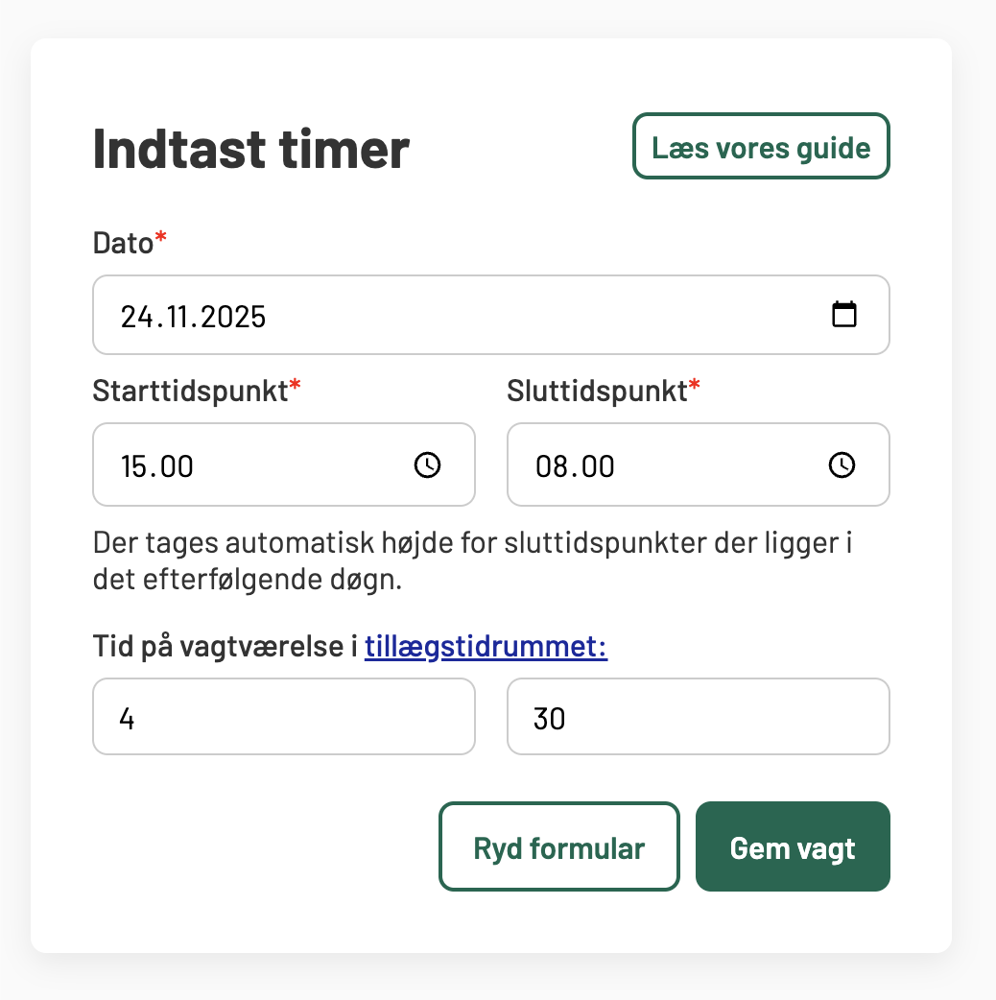

Sådan bruger du tillægsberegneren
Tillægsberegneren hjælper dig med løbende at holde et overblik over, om du optjener nok timer til at få 300-timers-tillægget.
Når du indtaster vagter, bliver de automatisk gemt i din browsers lokale hukommelse. Det betyder, at du ikke mister din data, hvis du lukker siden. Alt dataen ligger lokalt på din enhed i din browser. Du kan til enhver tid fjerne enkelte vagter eller rydde alt.
Nedenfor finder du en trin-for-trin guide til, hvordan du bruger værktøjet.
1) Indtast en vagt
For hver vagt skal du indtaste:
Dato (når du møder ind)
Starttidspunkt
Sluttidspunkt
Når du trykker "Gem vagt", bliver vagten gemt i oversigten. Beregneren håndterer automatisk vagter, der går over midnat. Vagterne gemmes i hukommelsen i browseren, så de vil stadig være der når du lukker hjemmesiden og åbner den igen senere.
Kalenderen tager automatisk højde for weekeender og helligdage.
2) Tast ind hvor længe du eventuelt var på vagtværelse i det tillægsgivende tidsrum
Efter tidspunkterne kan du taste ind hvor længe, du var på vagtværelse i løbet af din vagt. Du skal dog kun indtaste timer, som falder i disse tidsrum:
Aften/nat: mandag til fredag kl. 18-06
Weekend: fredag kl. 18-mandag kl. 06
Søgnehelligdage: hele døgnet
Det er kun disse tidspunkter, der er tillægsgivende og tæller med i de 300 timer.
Et par eksempler kan se således ud:
Du møder ind en mandag fra 15:00 til 8:00 næste morgen. Du går på vagtværelse fra kl. 1:30 og der er ro helt indtil du har fri. Her skal du taste 4 timer og 30 minutter fordi, det kun er timerne mellem 1:30 og 6:00, som tæller imod de tillægsgivende timer.En korrekt udfyldt vagt kan se således ud:

3) Vælg om værelsestimerne tæller med
Øverst i tabellen under "Mine vagter" finder du en indstilling, hvor du kan vælge:
☑ Tid på vagtværelse er tillægsgivende
Dette vil komme an på den lokalaftale, der gælder på din arbejdsplads. Checkboxen husker dit valg, så næste gang du åbner siden, behøver du ikke vælge igen. Når du ændrer indstillingen, opdateres alle vagterne automatisk, således at du nemt kan sammenligne, hvordan du er stillet i begge scenarier.
Hyppige spørgsmål
Nej, desværre. Dataen gemmes lokalt på enheden. Du kan dog trykke "Print mine vagter ud" og generer et dokument, som du kan printe eller sende til dig selv.
Dataen gemmes lokalt på din enhed i den browser, hvor du indtaster det. Det kan f.eks. være Google Chrome eller Safari. Det er kun dig og andre der evt. benytter samme computer, som kan se hvad du gemmer.
Vi anbefaler derfor at du skriver vagter ind på en computer/enhed, som du selv har råderet over og ikke en fælles arbejdscomputer eksempelvis.
Nej desværre. Men det er nemt at slette en vagt og tilføje en ny. Vagterne bliver automatisk sorteret efter dato, uanset hvornår du har indtastet dem.
På din lønseddel er der kun angivet de timer, som du rent faktisk har afviklet på den dato, hvor din lønseddel løber til. På 300timer.dk kan du indtaste kommende vagter, så det er muligt, at du er "foran" din HR-afdeling.
Hvis du alligevel kun har indtastet præcis de vagter, som der fremgår af din lønseddel og tallet stadig er mindre, så skal du gå til din nærmeste leder eller TR. Der kan være risiko for, at din arbejdsgiver har overset timer, som er tillægsgivende ifølge aftalen.
I den kommenterede aftale om vagttillægget, som Danske Regioner har udgivet, fremgår det at:
Under sygefravær optjenes vagttimer efter den normale vagtplan eller den bagvedliggende skyggeplan. [...] Formålet er, at den ansatte efter sygdom skal stilles, som om den ansatte ikke har været fraværende.
Samme ordlyd står der vedrørende barselsorlov. Du skal derfor gå til din nærmeste leder eller TR, hvis du mener, at dette ikke er blevet tilgodeset.